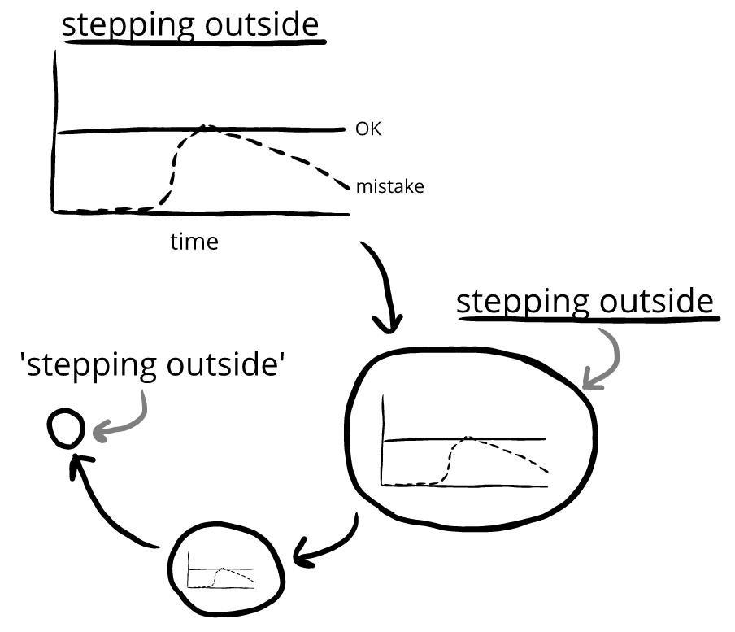

The last few chapters, we've graphed our evaluations over time. However, these graphs didn't always have titles:

When we add a title to the graph, we know the
In this book, we'll sometimes visualize topics as circles:

We'll use
We'll be going over this throughout this chapter.